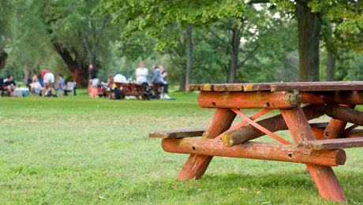

THE LOST FOREST
Relax and enjoy a picnic with your family and friends in this shady picnic spot by the edge of the lake.
Picnic tables and clean bathrooms are provided. There are shady trees and open grassy areas where you can sit, eat and enjoy the fresh air.
WHERE WILL YOU FIND IT?
The Lost Forest is to the east of the zoo, beyond Monkey Trail.